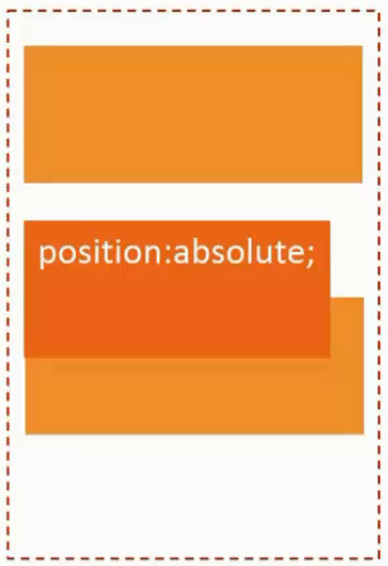
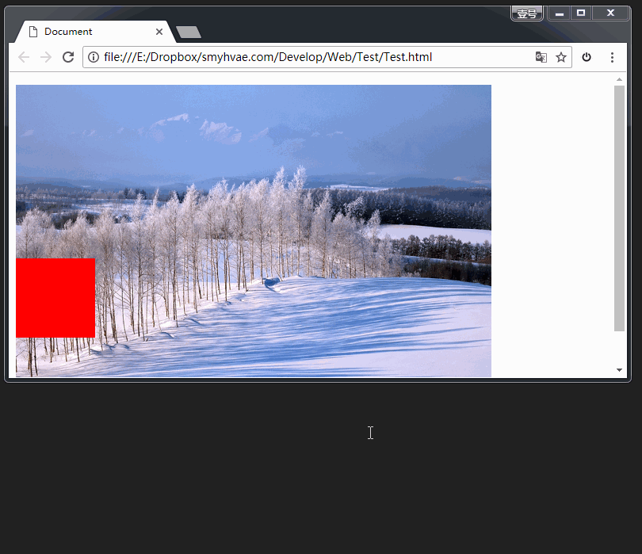

绝对定位
绝对定位中，盒子会完全从当前流中移除，并且不会再与其有任何联系。（译注：此处仅指定位和位置计算，而绝对定位的元素在文档树中仍然与其他元素有父子或兄弟等关系），其位置会使用 top、bottom、left 和 right 相对其包含块进行计算。元素在文档中的位置被删除,其他元素占用其位置进行重新排序。
如果 position 属性为 absolute :
1、所有祖先元素都没有定位，相对于body定位！
2、祖先元素有定位，包含块就是由它的最近的 position 的值不是 static（也就是值为fixed, absolute, relative 或 sticky）的祖先元素的内边距区的边缘组成。
绝对定位脱标，不占用位置！

1、包裹性（inline-block化）
浮动和绝对定位都具有包裹性（inline-block化）
浮动与绝对定位的差异：同处于文档流中的文字实体不会与浮动元素重叠，而会与绝对定位元素重叠。
元素绝对定位后，会为其后代元素建立一个包含块。若绝对定位元素不设置宽度，宽度由内容撑开（即width变成auto）！当只有空的子元素（没有宽高、文本）时，设置绝对定位、固定定位、浮动的父元素会没有内容，无法撑开宽高，所以父元素要加宽高，否则width:auto等于width:0，看不见！
position:static;或position: relative；时

position: absolute;或position: fixed；时

2、破坏性
元素绝对定位后，会脱离文档流，若父级为块级元素时不设置高度，则父级高度塌陷；若父级为行内元素时，无其他内容，则父级宽度也将塌陷！！！


3、元素同时应用了position: relative、float、（top / left / bottom / right）属性后，则元素先浮动到相应的位置，然后再根据（top / left / bottom / right）所设置的距离来发生偏移。
4、绝对定位之后元素脱离文档流, 没有了可以参照的父元素,因此无法实现 auto 的定位。所以绝对定位和浮动元素用margin: 0 auto;无效！
5、同时应用position: absolute及float属性，则float属性失效！
参考点问题：
1、如果用top描述，定位的参考点是整个页面的最左上角，而不是浏览器的左上角
2、 如果用bottom描述，参考点是“ 浏览器首屏窗口尺寸 ”，注意：是首屏， 对应当前页面的左下角（随页面和窗口的移动而变化，不随滚动条变化）

为了理解“首屏”二字的含义，我们来看一下动态图：


子绝父相
虽然子盒子是绝对定位，不管父盒子是绝对定位还是相对定位，甚至是固定定位都可以作为参考点，但是
子绝父相的由来
1、如果子盒子是相对定位，占用位置，其他盒子会按普通流方式掉下来。
2、如果父盒子是绝对定位，不占用位置，下一个元素的盒子会补上它的位置。
所以最好只能是子绝父相！
子绝父相不一定是父亲，也可能是爷爷。
“子绝父相”的意义：可以保证父亲没有脱标，儿子脱标在父亲的范围里面移动。
工程上经常这样做：
父亲浮动，设置相对定位（零偏移），然后让儿子绝对定位一定的距离！
工程应用：
绝对定位非常适合用来做“压盖”（把一个div放到另一个div之上）的效果。
父元素设置相对定位，子元素绝对定位并且四个方向都为零，不设置具体宽度跟高度，子元素会占满父元素?

当一个父级设置了position：relative；相对定位。
而子级设置position:absolute；绝对定位。此时设置了
top: 0;
right: 0;
bottom: 0;
left: 0;
思考一下，在水平方向上，一个没有设置的宽度的盒子，它要距离父级容器的左边距为0 ，也要距离父级容器的右边距为0，那么他要如何保证自己能做到这两点呢？只能拉伸自己，达到父级容器的要求。所以此时子级的宽度，与父级相同，垂直方向亦是如此。子级的height与父级的height相同。
这是绝对定位的拉伸性，是一种特性。
补充两点：
1、当子级设置了width和height后。也同时设置四个方向都为0 ，此时的表现如何？
此时的表现子级贴在容器的左上角。相当于：left：0；top：0；即
如果top和bottom都被指定（技术上，而不是auto），top 胜出。
如果指定了left 和right两侧，则在direction为ltr（英语，水平日语等）时left赢，
并且在direction为rtl时right赢（阿拉伯文，希伯来文等）。
2、当子级设置了width和height后。也同时设置四个方向都为0 ，再给子级设置margin:auto;此时作何表现？
子级水平垂直居中了。
相对定位
相对自己来定位，不脱标，老家留坑，灵魂出窍，别人不会把它的位置挤走。
就两个作用：
（1）微调元素
（2）做绝对定位的参考，子绝父相
固定定位
相对浏览器窗口进行定位。无论页面如何滚动，这个盒子显示的位置不变。

顶部导航条
我们经常能看到固定在网页顶端的导航条，可以用固定定位来做。
需要注意的是，假设顶部导航条的高度是60px，那么，为了防止其他的内容被导航条覆盖，我们要给body标签设置60px的padding-top。


z-index属性：
表示谁压着谁。数值大的压盖住数值小的。
使用前提：
z-index只能在position属性值为relative或absolute或fixed的元素上有效，浮动的元素不能用。
有如下特性：
（1）属性值大的位于上层，属性值小的位于下层。
（2）z-index值没有单位，就是一个正整数。默认的z-index值是0。
（3）如果大家都没有z-index值，或者z-index值一样，那么在HTML代码里写在后面，谁就在上面能压住别人。定位了的元素，永远能够压住没有定位的元素。
（4）拼爹现象：父亲怂了，儿子再牛逼也没用。意思是，如果父亲1比父亲2大，那么，即使儿子1比儿子2小，儿子1也能在最上层。
（5）向上追溯找不到含有z-index值的父元素的情况下，则可以视为自由的z-index元素，它可以与父元素的同级兄弟定位元素或其他自由的定位元素来比较z-index的值，决定其堆叠顺序。同级元素的z-index值如果相同，则堆叠顺序由元素在文档中的先后位置决定，后出现的会在上面。